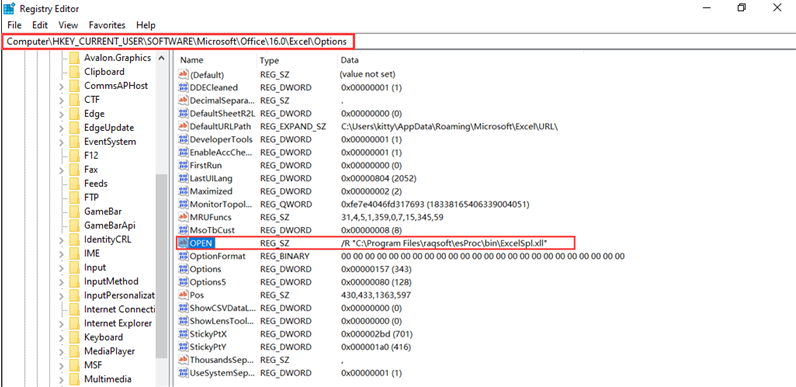

This is an esPoc Enterprise edition feature.
On Cloud Storage Service window, select a cloud storage type, which supports “Amazon S3” and “Winhong” for the time being.
Then click “New” button to get into Storage Service Settings window, where you can set up connection information related to the corresponding cloud storage platform.
To begin the setup, you need to first copy the jar files used by the cloud storage type under 【esProc installation directory】\esProc\q-extlib into【esProc installation directory】\esProc\lib. To configure settings for Amazon S3, for instance:
You need to copy the jar file in s3 directory under【esProc installation directory】\esProc\q-extlib into【esProc installation directory】\esProc\ lib, and create a new storage service settings connection:

Note: Same as “Amazon S3”, the “Winhong” cloud storage type also uses the jar files in s3 directory.
【Cache path】: To perform file computations on a cloud storage platform, the file object is by default automatically downloaded to cachePath/storeType/bucketName. The cache path is by default the system’s cache directory, such as C:\Users\UserName\AppData\Roaming\__scudatacache\s3.
【Min available space】: The minimum available space in the directory containing the cache files. When the available space is less than the specified minimum amount, cached files in the directory will be automatically deleted.
【Cache block size】: Specify the size of cache block.